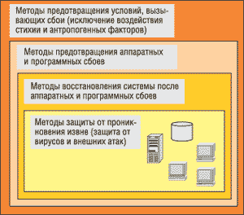
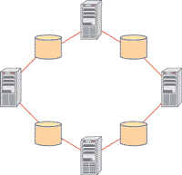
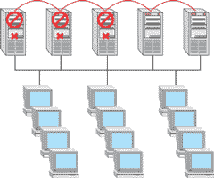

Стабильная работа любой компании в течение продолжительного времени основана на принципе непрерывности бизнеса. Каждый час, а порой и каждая минута простоя могут обернуться для компании непоправимым ущербом.
Представим себе Интернет-магазин, в котором неожиданно произошел сбой на сервере. Если информационная инфраструктура компании не защищена от возможных сбоев и потери информации, то при выходе из строя сервера магазин столкнется с целым рядом проблем.
Во-первых, потерялись неподтвержденные и необработанные заказы, а новые просто не поступили. Во-вторых, за время восстановления сервера (а это может занять от нескольких часов до нескольких суток) Интернет-магазин не работал, следовательно, часть клиентов либо отказались от покупки, либо сделали покупку у конкурентов - наша компания этих клиентов потеряла. И, в-третьих, часть данных на сервере (например, каталог продукции или регистрационные данные покупателей) могли просто пропасть. А восстановление такой информации (при отсутствии резервной копии) - это даже не несколько суток.
Согласно данным Meta Group, одной из самых авторитетных исследовательских фирм, цена часа простоя может достигать миллиона долларов в зависимости от масштаба компании. Соответственно, для средних или небольших компаний такой простой может обернуться катастрофой.
По оценке Gartner, в США простой сервера приводит к банкротству двух из пяти компаний в течение пяти лет с момента происшествия. К такому же выводу приходит и Бюро трудовой статистики США - 93% компаний, подвергшихся "существенной потере данных", сворачивают свой бизнес в течение пяти лет.
Таким образом, залогом непрерывного бизнеса становится безопасность информации и информационной системы компании в целом. Безопасность информации в таком понимании и есть безопасность бизнеса. Но как обеспечить безопасность информации?
Планирование мер, обеспечивающих непрерывность бизнес-процессов компании, - это комплексный процесс, однако наиболее критичными оказываются простои информационной инфраструктуры предприятия. Следовательно, основные меры по обеспечению непрерывности бизнеса так или иначе направлены на сохранение работоспособности информационной инфраструктуры предприятия и возможности ее быстрого восстановления в случае сбоя.
Все существующие решения, обеспечивающие безопасность информационной инфраструктуры компании, можно условно разделить на четыре класса (рис. 1).
|  | Рис. 1. Классы решений для обеспечения безопасности информационной инфраструктуры.
|
Базовые принципы безопасности - это защита от вирусов и незаконных проникновений в систему. Это те методы защиты, которые любая уважающая себя компания должна использовать постоянно (то, что нынче модно называть must have).
На следующем уровне этой классификации - методы, направленные на восстановление системы после сбоя. Это прежде всего программные решения, позволяющие в сжатые сроки возобновить работу сервера и восстановить утерянную информацию.
Уровнем выше расположен класс решений, позволяющих предотвратить программные и аппаратные сбои. Здесь речь идет об аппаратных решениях, использующих несколько взаимозаменяемых серверов, распределенные хранилища данных и т. д.
На самом верхнем уровне находятся решения, позволяющие исключить не столько поломки сервера, сколько условия, которые могут послужить причиной сбоя или уничтожения информации. Эти решения представляют собой комплекс технических и организационных мер, направленных на защиту информации и оборудования от внешних воздействий.
Мы будем рассматривать эту классификацию сверху вниз, от самых сложных и дорогостоящих мер постепенно опускаясь к самым доступным и необходимым.
Физическая защита серверов
Физическая защита серверов строится в расчете на два фактора, наиболее часто представляющих угрозу безопасности и определяющих список мер, применяемых для ее обеспечения.
Первый фактор - стихийные бедствия. Это совершенно глобальное обстоятельство, которое, как правило, учитывается только в масштабах крупных компаний, имеющих, скажем, географически распределенные серверы и хранилища информации.
Меры обеспечения безопасности и непрерывной работы бизнеса в обстоятельствах стихийных бедствий (пожары, наводнения, землетрясения) носят чисто технический характер - к ним относится, например, оборудование специальных серверных помещений, прежде всего пожаробезопасных, а кроме того, с вентиляцией, с постоянной температурой и влажностью воздуха.
Существует ряд рекомендаций по обустройству серверных помещений: в зоне наводнений рекомендуется располагать серверные комнаты как можно выше, а в зоне землетрясений - наоборот, на первом этаже или даже в подвале здания.
Второй фактор - антропогенные воздействия. К ним относят нарушения, вызванные действиями людей. Это может быть отключение сервера в случае ошибки работника или незаконного проникновения в серверное помещение. Сюда же относятся и более опосредованные воздействия - по вине человека отключилась подача электроэнергии (кто-то случайно выключил рубильник или перерубил кабель).
Для предотвращения возможных нарушений безопасности по вине человека имеет смысл использовать комплекс организационных мер - усилить охрану, ограничить доступ к серверным помещениям.
Если речь идет об электроэнергии, то очевидно, что серверное помещение должно быть оборудовано источниками бесперебойного питания, позволяющими либо отключить сервер не аварийно, а предварительно сохранив всю информацию, либо поддержать систему в рабочем состоянии до подключения резервных источников питания.
Вопрос обеспечения безопасности на этом уровне встает, как правило, перед крупными организациями, имеющими обычно целый комплекс серверов, возможно, даже распределенных географически. Причем использование решений такого класса оправдано лишь в том случае, если ущерб от потери информации сравним со стоимостью самого решения.
Если же у компании нет необходимости или возможности предусмотреть все условия, вызывающие сбой системы и простой в работе, то следует обратить внимание на решения, позволяющие эти сбои предотвратить.
Защита от сбоев аппаратной и программной части
Ни для кого не секрет, что чем мощнее и производительнее становится техника, тем она сложнее. Причем сложнее настолько, что актуальными оказываются даже те виды внешнего воздействия, которые ранее не могли оказать заметного влияния. К таким воздействиям можно отнести многое - от наводок в электрической сети до, условно говоря, пролета нейтрино. Среди системных администраторов довольно популярна теория о том, что даже элементарные частицы могут повлиять на работу процессора и вызвать сбой.
Не будем вдаваться в подробности и перечислять все возможные причины отказа техники. Примем это как данность: случается, что техника выходит из строя - перегорают процессоры, "умирают" жесткие диски. Причем все это случается совершенно неожиданно и в самый неподходящий момент.
Первое, что приходит в голову, когда речь идет об остановке сервера, - "под рукой" должен быть еще один точно такой же сервер, готовый заменить остановившийся, как только произошел сбой. Существует множество примеров построения надежной системы за счет избыточности аппаратных средств - это и RAID-массивы, где в случае отказа одного из дисков обработка запросов к информации, хранящейся на других дисках, не прервется; это и многопроцессорные системы, в которых функционирование системы не прервется при отказе одного из процессоров.
Аналогичный подход для системы целиком позволяет в случае остановки одного сервера ввести в работу резервный сервер. Называется такой подход кластеризацией. Понятие "кластеризация" имеет несколько определений. В приложении к нашей теме под кластеризацией мы будем иметь в виду технологию, позволяющую нескольким серверам функционировать как один. При этом и пользователи, и приложения воспринимают их как единую систему. Если один из серверов выходит из строя, его подменяют запасные серверы (один или несколько), но на работе пользователей и приложений это никак не отражается.
При кластеризации возможно несколько вариантов использования основного и запасных серверов. В одном случае запасные серверы выступают исключительно как резервирующие, т. е. происходит обычное зеркалирование серверов. На "зеркале" установлено то же самое ПО, он связан с основным сервером коммутационным каналом, который поддерживает резервную систему в актуальном состоянии. При выходе из строя основного сервера активным становится "зеркальный", однако это никак не сказывается на выполнении приложений, обработке запросов и работе пользователей.
Финансово такой способ себя не всегда оправдывает, так как стоимость аппаратной части системы возрастает в несколько раз, хотя количество выполняемых серверами задач остается прежним. В ситуации, когда необходимо обезопасить работу одного сервера, кластеризация - не лучший выход.
Однако если в организации имеется несколько серверов, выполняющих разные задачи, кластеризация - выход из положения. В этой ситуации запасные серверы остаются активными, выполняя свои задачи, пока их ресурсы не понадобятся основному серверу. Распределение задач остановившегося сервера между остальными берет на себя специальное кластерное ПО. Такое ПО работает по заранее заданным сценариям, решая проблемы восстановления всего сервера или части данных и перенаправляя запросы пользователей и приложений на работающие узлы кластера.
Достоинство кластеризации в том, что она позволяет синхронизировать в реальном времени несколько серверов и при этом обеспечивать тиражирование данных между несколькими хранилищами. Например, возможен вариант, когда каждая пара узлов кластера (серверов) связана с общим для них хранилищем данных, и при этом приложения каждого сервера продублированы на соседних серверах (рис. 2).
|  | Рис. 2. Конфигурация кластера N+1.
|
Если же говорить о доступе клиентских компьютеров к серверам, то здесь можно привести в пример конфигурацию "каскад", при которой в случае сбоя одного или нескольких серверов клиентские запросы переадресуются к работающим серверам (рис. 3).
|  | Рис. 3. Кластерная конфигурация "каскад".
|
Хранилища информации при этом могут быть организованы самыми разными способами, начиная от RAID-массивов и заканчивая системами DAS (Direct Attached Storage), NAS (Network Attached Storage) и SAN (Storage Area Networks).
Однако кластеризация возможна только в пределах одного предприятия, так как для работы кластеры нуждаются в высокоскоростных соединениях между узлами.
Еще один довольно распространенный вариант аппаратной избыточности - RAID-массивы, но он пригоден для сохранения только данных, а не всей системы целиком. Впрочем, в RAID-массивах можно хранить и резервные копии образов системы, но об этом речь пойдет ниже.
В RAID-массивах (Redundant Arrays of Independent Disks) несколько жестких дисков функционируют как одно устройство. В таких устройствах происходит параллельное чтение/запись сразу нескольких дисков, а это значит, что повышается не только производительность, но и надежность системы. Кроме того, на одном или нескольких дисках массива хранятся избыточные данные для контроля четности, что в случае сбоя одного из дисков позволяет восстановить утерянную информацию. Но при отказе двух и более дисков массива потери информации неизбежны. Поэтому данные придется резервировать, регулярно перенося их на оптические носители или магнитную ленту.
Восстановление после сбоя
Предположим, что сбой все же произошел, и предотвратить его на аппаратном уровне не удалось. В этом случае перед нами стоят две задачи - спасти информацию и привести сервер в рабочее состояние в максимально короткие сроки.
Все решения этой проблемы базируются на общем принципе регулярного резервного копирования данных и восстановления их после сбоя, т. е. подобные решения реализуются на программном уровне. Стоит заметить, что применение программных средств - неотъемлемая часть комплекса мер по обеспечению непрерывности бизнес-процессов.
Основная особенность программных средств в том, что они могут существовать вне зависимости от прочих мер - организационных, технических, аппаратных. Применение программных средств оправдано в любом случае, независимо от того, расположена ли серверная комната в экранируемом, пожаробезопасном и строго охраняемом помещении, или наличествуют ли в инфраструктуре кластеры серверов и распределенные хранилища данных.
Программные решения масштабируемы - их можно и нужно использовать как в маленькой компании с одним сервером, так и в огромных корпорациях, где серверное помещение и хранилище данных занимают несколько этажей. В соответствии с масштабами компании можно выбрать подходящий вариант программного решения, например, сэкономив на возможности удаленного администрирования системы резервирования данных, но при этом почти не теряя в эффективности самого решения.
Программные решения, используемые в целях обеспечения непрерывности бизнеса, - это системы резервного копирования и хранения данных. Именно их применение гарантирует постоянный доступ к хранимым данным и быстрое их получение корпоративным пользователем в случае чрезвычайных обстоятельств.
Скорость доступа и восстановления - величина критичная. Чем она меньше, тем меньше время дорогостоящего простоя организации.
Самый простой вариант - регулярно делать резервные копии всей необходимой информации (например, базы данных клиентов, базы данных товаров) и хранить их отдельно - на отдельном компьютере, в сети SAN, на магнитной ленте на полке. При этом резервное копирование выполняется либо вручную администратором, либо автоматически, самой системой по заданному расписанию.
Безусловно, такое решение "дешево и сердито", однако не всегда эффективно. Если хранить только данные, их всегда можно восстановить из резервной копии. Однако при "падении" самой системы придется сначала вручную восстановить всю систему, со всеми приложениями и настройками, а потом уже данные. В этом случае простой в работе гарантирован.
Гораздо более эффективен подход, при котором резервируется не столько информация, сколько вся система целиком. В этом случае можно хранить резервную копию образа всей системы и при выходе сервера из строя за короткие сроки развернуть систему вновь, вернувшись к последнему сохраненному рабочему состоянию. Естественно, что полностью вручную это сделать невозможно. Для организации такого метода существует специальное ПО, которое можно настраивать под конкретные нужды конкретной системы.
Как было выше сказано, подобные программные решения в массе своей масштабируемы, т. е. для определенных нужд можно выбрать пакет для сохранения резервной копии сервера, или добавить к нему пакет для администрирования клиентских машин и сохранения их резервных образов, или приобрести полное программное решение, позволяющее резервировать всю инфраструктуру предприятия.
Примером последнего решения служат комплексные системы, позволяющие поддерживать в рабочем состоянии не только серверы и хранилища данных, но и компьютеры сотрудников компании. Подобные программные комплексы сохраняют работоспособность рабочих станций за счет следующих возможностей:
- установки на рабочие станции унифицированных образов системы;
- сохранения на сервере резервных копий образов клиентских систем, что позволяет в сжатые сроки восстановить на рабочей станции как утерянные данные (в случае программной ошибки), так и всю систему целиком (например, в случае выхода из строя жесткого диска);
- управления патчами. Все патчи и обновления ОС централизованно устанавливаются на все клиентские машины. В случае необходимости всегда возможен откат к предыдущему состоянию;
- автоматизированного сбора информации о рабочих станциях - о необходимости обновления приложений или аппаратной модернизации.
Естественно, что в этих системах резервная информация может храниться не только и не столько на самом сервере, сколько в сетевых хранилищах данных или же на сменных накопителях.
Кстати сказать, сменные накопители часто оказываются самым удобным устройством для резервного хранения данных. Как показывает практика, ленты долговечны, их можно перезаписывать, они достаточно дешевы, но при этом очень емки. Благодаря такому соотношению полезных качеств магнитные ленты до сих пор остаются самым популярным носителем как для регулярного резервного копирования, так и для архивирования данных по принципу Electronic Records Management, когда электронные носители данных передаются специальным организациям на ответственное хранение.
Таким образом, будет вполне справедливо сказать, что правильный подбор программных решений не просто составляет важнейшую часть корпоративных усилий по обеспечению непрерывности бизнеса, но и позволяет сэкономить даже на аппаратном обеспечении.
Защита от взломов и вирусов
Всевозможные способы резервирования данных или аппаратной части системы, безусловно, важны и оправданны. Однако есть низший в нашей классификации уровень безопасности, на котором должны быть реализованы базовые принципы защиты системы. Механизм их реализации ни в коей мере не зависит от того, как происходит резервирование данных или работа RAID-массивов в хранилищах.
На этом уровне реализуются методы защиты системы компании от проникновения в нее извне, по сетям передачи данных. Это методы защиты от вирусов и от незаконных проникновений в систему с целью воровства информации либо денег или же без всякой конкретной цели.
Есть несколько видов проблем, вызываемых недостаточной надежностью системы защиты от вирусов и проникновений в систему.
Самый безобидный вариант - самоутверждающиеся мальчишки-хакеры могут испортить сайт компании, нарисовав или написав на первой странице что-нибудь не очень приличное. Конечно, такое происшествие не критично для компании, это скорее досадный инцидент. Как правило, такие вещи отслеживаются администраторами достаточно быстро и особого ущерба не наносят, так как не вызывают долгосрочного простоя в работе компании.
Вирусы наносят более серьезный урон компании. Особенно масштабные последствия вызывают вирусы, полученные сотрудниками по электронной почте и по незнанию разосланные по всей компании. Результат попадания вируса в сеть компании - временное нерабочее состояние части компьютеров. Насколько оно временное - зависит от количества зараженных компьютеров и оперативности технического отдела.
Если, к примеру, инфицирован компьютер в бухгалтерии, это означает, что временно невозможны никакие финансовые операции, если только в компании не один бухгалтер, и его более удачливый и осмотрительный коллега сможет выписать счет или провести платеж со своей, "здоровой", машины. Следовательно, чем крупнее компания, тем менее ощутим урон от вирусной атаки, чем меньше компания - тем меньше шансов у нее обойтись без потерь.
DOS-атаки - целенаправленное вредительство. DOS-атака - это разновидность взлома, не имеющая под собой никакой личной выгоды. Это просто вредительство, выведение системы из строя. Но результат DOS-атак может быть весьма неприятен, они способны легко вывести сервер из строя на продолжительное время.
Незаконное проникновение в локальную сеть, в систему, с целью воровства денег или доступа к секретной информации. Результат - реальные финансовые потери. По отчетам ФБР, ежегодные потери от промышленного шпионажа составляют от 24 до 100 млрд долл., потери американского бизнеса от деятельности иностранных компьютерных хакеров достигают 100 млрд долл. в год, а потери от несанкционированного доступа к информации финансовых институтов США составляют ежегодно не менее 1 млрд долл.
Очевидно, что любые дальнейшие меры обеспечения непрерывности бизнеса - программные ли, аппаратные или организационно-технические - не имеют смысла без использования средств защиты системы на начальном уровне. Если сервер не защищен от проникновений, атак или вирусов, то любые другие средства безопасности системы и информации не будут столь эффективны и вряд ли спасут ситуацию.
***
Принимая решение об использовании того или иного метода безопасности информационной структуры предприятия, имеет смысл задуматься о необходимости и оправданности использования средств. Затраты на совершенствование решений, равно как и эффект от их применения, растут нелинейно - приобретение новых возможностей, новых свойств с каждым разом требует все больших вложений. Компания сама решает, нужно ли ей оборудовать отдельное помещение под серверную комнату, нужно ли разворачивать сетевое хранилище данных и кластеры из нескольких компьютеров, или же просто ограничиться системой резервного копирования данных. Последний вариант, безусловно, дешевле, однако менее эффективен в случае серьезной аппаратной поломки. В то же время в компании с единственным сервером организовывать зеркалирование серверов экономически невыгодно. Проще будет восстановить систему из образа, хранящегося на DVD-диске или ленте.
Можно сказать, что выбор подходящего решения начинается не с вопроса "на чем бы сэкономить", а с максимально необходимого набора возможностей. Реальная стоимость решения - не та сумма, которую требуется одномоментно заплатить, а та, которую компания заплатит при возможном простое системы.